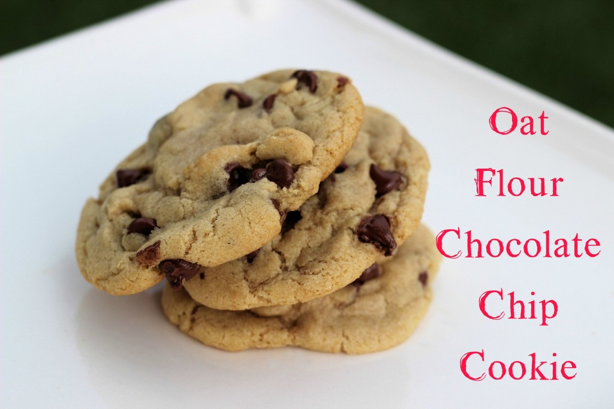

Back
Oat Flour Chocolate Chip Cookies
Ingredients
- 1 plus 2 TBSP stick butter
- ½ cup brown sugar
- ½ cup white sugar
- 1 egg
- 1½ teaspoon vanilla
- ¾ teaspoon baking soda
- ½ to ¾ teaspoon salt
- 2½ cup oat flour
- 10 ounces chocolate chips

Instructions
- Cream the butter with the sugars, add in the egg and vanilla. Mix until smooth. Sift together the oat flour with the salt and baking soda. Stir into the wet ingredients- note the dough will be stickier than “normal” cookie dough and add in the chocolate chips. NOW REFRIGERATE at least 2 hours or longer. In my opinion the longer the better.
- Spoon onto baking sheet and bake in a preheated 350 degree oven for 9-10 minutes, until the edges are slightly golden brown
Source